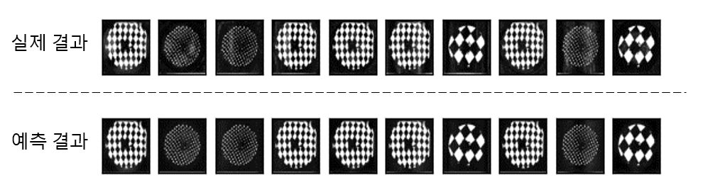
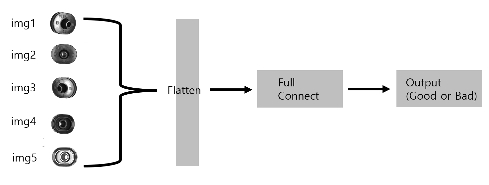
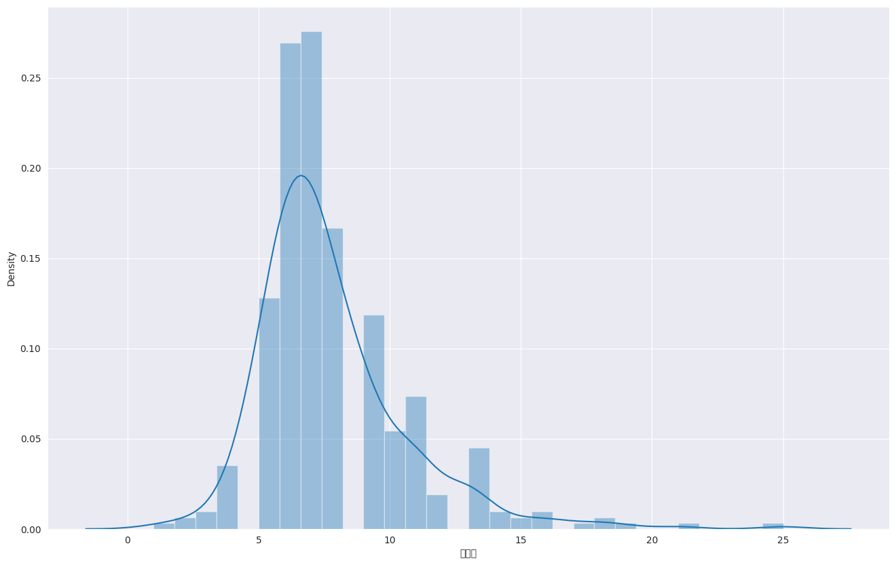
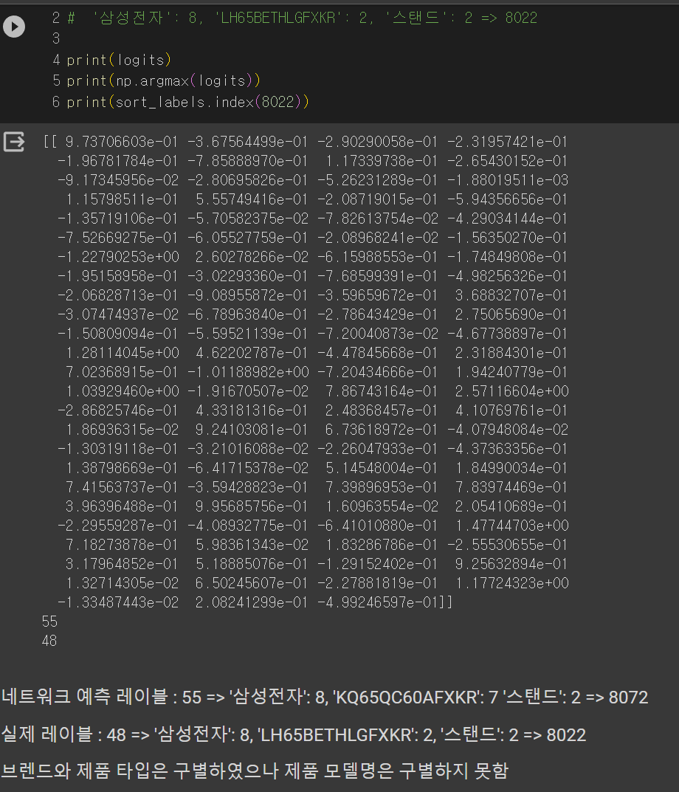

프로젝트 수행 이력
| 개 요 | 조난자 탐색을 위한 AI 엔진 개발(한국표준협회 교육과정) |
| 세부내용 | 드론에 올릴수 있는 소형 GPU 전용 AI 경량 엔진 개발 및 성능 테스트 수행 |
| 소속기관 | AI 기반 혁신 인재 양성 프로그램 |
| 수행기간 | `19.06 ~`19.11(6개월) |
| 사용기술 및 환경 | 파이썬, Yolo, 영상처리 |
| 실적 | 기업(무지개 연구소) 조난자 탐색 프로그램 엔진 채택 |
| 주요업무 | 1. 영상 데이터 수집 - 프로젝트에 맞는 내려다보는 영상데이터 수집 2. 영상 데이터 전처리 - 영상 데이터 전처리 3. 알고리즘 Fine Tuning - 기존의 Yolo 알고리즘을 프로젝트에 목표에 맞게 박스 크기 조절 및 학습 |
| 데모 |
| 개 요 | 고무제품 전사 결과를 예측하기 위한 툴 개발 |
| 세부내용 | "Pad 프린팅"에 사용되는 패턴, Pad 형태, 전사 대상물 형체의 3가지 Input data를 통해 전사 결과물을 output으로 하는 엔진 개발 및 UI 개발 |
| 소속기관 | 영동테크 AI 연구소 (경북IT융합산업 기술원 과제) |
| 수행기간 | `21.07 ~`22.12(6개월) |
| 사용기술 및 환경 | 파이썬, 영상처리, 오토인코더, blender, 3d printing |
| 실적 | 개발 완료, 엔진 정확도 80%이상 달성 |
| 주요업무 | 1. Pad 형태 및 인쇄 패턴 설계 - blender로 고무 Pad의 형태 설계, Pad 프린트용 무늬 설계 2. 실물 제품 출력 - Pad 설계 파일을 바탕으로 3d 프린트하여 실물 제품 출력 3. 영상 데이터 전처리 - 영상 데이터 전처리 4. 영상 데이터 수집 - 실물 Pad 사진과 설계 파일 Gray 이미지와 인쇄 패턴의 영상 데이터 수집 5. Autoencoder 설계 - 3개의 이미지를 R,G,B 레이어에 배치하여 인쇄결과를 예측 할수 있는 알고리즘 개발 |
| 데모 |   |
| 개 요 | 고무제품 자동검사를 위한 자동 검사기 개발 |
| 세부내용 | 룰베이스 방식을 적용하기 어려운 고무제품에 AI기반 솔루션을 사용하여 제품 자동 검사기의 개발 |
| 소속기관 | 영동테크 AI 연구소(중기부 과제) |
| 수행기간 | `21.07 ~`22.07(1년) |
| 사용기술 및 환경 | 파이썬, 영상처리, Resnet, PLC, GigaE 카메라, Image grabber |
| 실적 | 재현율: 96%이상 도달, 정밀도 : 90% 이상 도달 |
| 주요업무 | 1. 영상 데이터 수집 설계 - 사내 제품 불량기준 확립 및 데이터 수집 과정 설계 2. 자동화 기기 System Integration - 자동 검사기 PLC, GigaE 카메라, 촬영용 PC 시스템 통합 3. 영상 수집 - 자동화 기기를 통해 수집 4. 영상 전처리 - 영상 전처리 5. 자동 검사 알고리즘 개발 - Resnet 기반의 5채널 이미지 통합한 이진 분류 알고리즘 개발 |
| 데모 |  |
| 개 요 | 자연어 처리를 이용한 상품 정보 추출 알고리즘 개발 |
| 세부내용 | BERT 기반의 계계독해 알고리즘을 통해 상품 정보 추출 |
| 소속기관 | 개인 프로젝트 |
| 수행기간 | '23.08.03~'23.08.10 |
| 사용기술 및 환경 | 파이썬, 자연어 처리, BERT, 토크나이징, Google colab |
| 실적 | 브랜드와 제품 타입 추출 가능 |
| 한계점 | 제품 모델명 추출 못함 - 추가 개발을 통해 성능 향샹 요구됨 |
| 주요업무 | 1. 데이터 전처리 - 원본 테이블에서 브랜드, 제품 타입, 제품 모델을 추출 가능한 테이블만 따로 저장 2. 데이터 셋 분석 - Input 테이블의 길이를 기준으로 분포표 출력 3. 데이터 파이프 라인 구련 - BERT 입출력 형식에 맞게 변환 4. 토크나이징 - 상품명 데이터열에 있는 문자열을 분리 5. 데이터 정규화 - 가장 긴 문장을 기준으로 데이터 크기를 통일 6. 학습 - 데이터셋 분리 및 학습 7. 결과 확인 - 학습에 사용되지 않은 데이터를 기준으로 확인 |
| 데모 |  |
e-mail : tbh00228@gmail.com